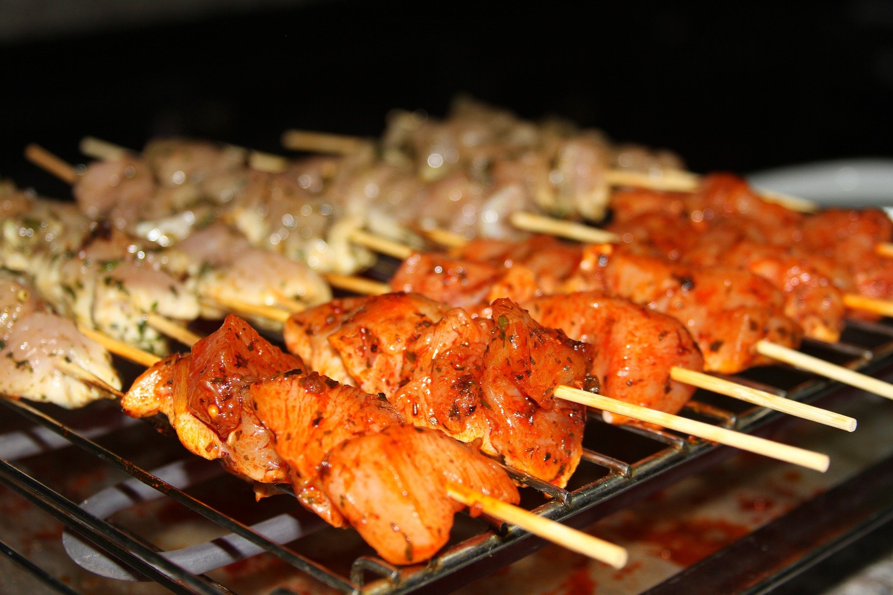

Yakitory (grilled chicken)
Recipe
Ingredients:
- 1 pound chicken livers gizzards or boneless thigh meat
- ½ cup dark soy sauce or tamari
- ¼ cup mirin
- 2 tablespoons sake or dry sherry
- 1 tablespoon brown sugar
- 2 garlic cloves peeled and smashed
- ½ teaspoon grated fresh ginger
- Scallions thinly sliced, for garnish
Instructions:
- Cut chicken into one-inch pieces and place in a shallow dish.
- In a small saucepan, combine soy sauce or tamari, mirin, sake or sherry, brown sugar, garlic and ginger. Bring to a simmer and cook for 7 minutes, until thickened. Reserve 2 tablespoons of sauce for serving. Pour remaining sauce over chicken, cover, and chill for at least one hour (and up to 4 hours).
- If using wooden or bamboo skewers, soak them in water for one hour. Preheat the grill or broiler. Thread chicken pieces onto skewers, and grill or broil, turning halfway, for about 3 minutes for livers, 10 minutes for gizzards and 6 minutes for thighs. Serve drizzled with reserved sauce and garnished with scallions.